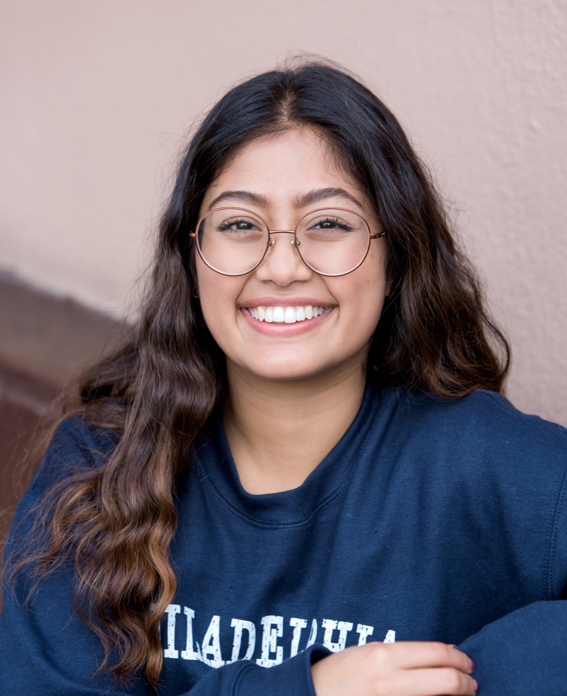
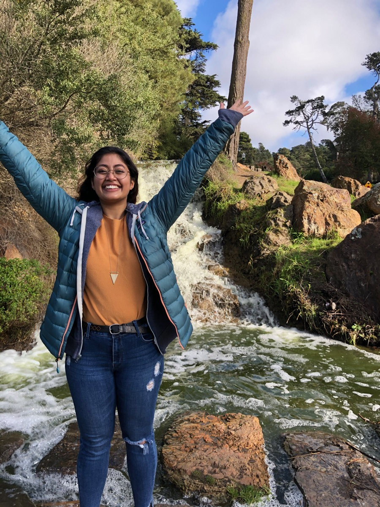
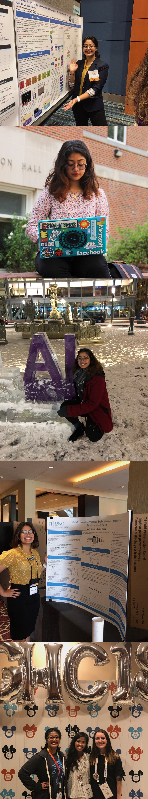

Sweta Karlekar
Computer Science, PhD Student
Columbia University, Advised by Dr. David Blei

Computer Science, PhD Student
Columbia University, Advised by Dr. David Blei

Hi! I'm a software engineer @ Facebook working on Bayesian modeling and probabilistic programming languages. During my undergrad at UNC Chapel Hill, I majored in Computer Science and minored in Entrepreneurship.
I conducted research on new computational methods to capture learning interaction patterns in K-12 students. I also conducted deep learning and Natural Language Processing (NLP) research and published papers to NAACL, NAACL-WiNLP, and EMNLP on detecting linguistic characteristics of Alzheimer's, and detecting/aggregating/classifying stories of domestic abuse and sexual harassment respectively. I received a nomination from NAACL-WiNLP as an outstanding undergraduate researcher and was chosen to be a part of Google's AI Research Mentorship program, where I had the opportunity to attend NeurIPS 2018 and be mentored by Google Brain research scientists.
I've completed machine learning internships at MITRE Corp, Disney, Yelp, and Facebook in the realms of generating GAN image data for national security, developing chatbots, predicting advertiser retention, and building anomaly detection platforms respectively. I've also interned at two startups, Bubble and Ethena, as a full-stack engineer in Coffeescript, Javascript, and Typescript, and used React and PostgreSQL.
Most recently in my free time, I volunteered as Data Science Fellow on NC-Senate District 13's Democratic Campaign through Bluebonnet Data. I care a lot about the ways tech can influence society for good and am a vocal advocate for women in CS through Girls Who Code and Rewriting the Code. I also love to bake, cook, watch TV, read sci-fi and fantasy, crochet, and paint little rocks.

Questions? Collaborations?
Contact me at swetakar@cs.unc.edu.
Sweta Karlekar, Mohit Bansal Oral Presentation at EMNLP 2018SafeCity: Understanding Diverse Forms of Sexual Harassment Personal Stories
With the recent rise of #MeToo, an increasing number of personal stories about sexual harassment and sexual abuse have been shared online. In order to push forward the fight against such harassment and abuse, we present the task of automatically categorizing and analyzing various forms of sexual harassment, based on stories shared on the online forum SafeCity. For the labels of groping, ogling, and commenting, our single-label CNN-RNN model achieves an accuracy of 86.5%, and our multi-label model achieves a Hamming score of 82.5%. Furthermore, we present analysis using LIME, first-derivative saliency heatmaps, activation clustering, and embedding visualization to interpret neural model predictions and demonstrate how this helps extract features that can help automatically fill out incident reports, identify unsafe areas, avoid unsafe practices, and ‘pin the creeps’.
Sweta Karlekar, Tong Niu, Mohit Bansal Poster Presented at NAACL 2018Detecting Linguistic Characteristics of Alzheimer’s Dementia by Interpreting Neural Models
Alzheimer's disease (AD) is an irreversible and progressive brain disease that can be stopped or slowed down with medical treatment. Language changes serve as a sign that a patient's cognitive functions have been impacted, potentially leading to early diagnosis. In this work, we use NLP techniques to classify and analyze the linguistic characteristics of AD patients using the DementiaBank dataset. We apply three neural models based on CNNs, LSTM-RNNs, and their combination, to distinguish between language samples from AD and control patients. We achieve a new independent benchmark accuracy for the AD classification task. More importantly, we next interpret what these neural models have learned about the linguistic characteristics of AD patients, via analysis based on activation clustering and first-derivative saliency techniques. We then perform novel automatic pattern discovery inside activation clusters, and consolidate AD patients' distinctive grammar patterns. Additionally, we show that first derivative saliency can not only rediscover previous language patterns of AD patients, but also shed light on the limitations of neural models.Lastly, we also include analysis of gender-separated AD data.
Sweta Karlekar, Mohit Bansal Poster Presented at NAACL WiNLP 2018#MeToo: Neural Detection and Explanation of Language in Personal Abuse Stories
The detection and classification of domestic abuse stories shared online has ever-increasing importance in today's social activism sphere. With massive numbers of stories shared, automatic detection can aggregate stories from around the internet and help push forward the fight against domestic abuse from a social campaign to social change. We develop CNN, LSTM-RNN, and CNN-LSTM neural models to detect domestic abuse stories in the Reddit Domestic Abuse dataset. We achieved 95.8% accuracy in classifying posts as containing abuse stories versus not containing abuse stories, outperforming the current state-of-the-art. More importantly, we next present sentiment-only classification feasibility as well as interpretable and explainable analysis of the neural model's predictions using activation clustering techniques to automatically discover linguistic features.
Becker, S. J.; Daughtry, C. S. T.; Jain, D.; Karlekar, S. S. American Geophysical Union, Fall Meeting 2015Developing a Method to Mask Trees in Commercial Multispectral Imagery
The US Army has an increasing focus on using automated remote sensing techniques with commercial multispectral imagery (MSI) to map urban and peri-urban agricultural and vegetative features; however, similar spectral profiles between trees (i.e., forest canopy) and other vegetation result in confusion between these cover classes. Established vegetation indices, like the Normalized Difference Vegetation Index (NDVI), are typically not effective in reliably differentiating between trees and other vegetation. Previous research in tree mapping has included integration of hyperspectral imagery (HSI) and LiDAR for tree detection and species identification, as well as the use of MSI to distinguish tree crowns from non-vegetated features. This project developed a straightforward method to model and also mask out trees from eight-band WorldView-2 (1.85 meter x 1.85 meter resolution at nadir) satellite imagery at the Beltsville Agricultural Research Center in Beltsville, MD spanning 2012 - 2015. The study site included tree cover, a range of agricultural and vegetative cover types, and urban features. The modeling method exploits the product of the red and red edge bands and defines accurate thresholds between trees and other land covers. Results show this method outperforms established vegetation indices including the NDVI, Soil Adjusted Vegetation Index, Normalized Difference Water Index, Simple Ratio, and Normalized Difference Red Edge Index in correctly masking trees while preserving the other information in the imagery. This method is useful when HSI and LiDAR collection are not possible or when using archived MSI.
Senior Profile by UNC-CH and UNC School of Arts and Sciences
Recognized by UNC-CH Computer Science for Undergraduate Research
CRA Outstanding Undergraduate Researcher Award Runner-Up
Featured in Top Paper Picks in Sebastian Ruder's NLP Newsletter
Work Featured in Towards Data Science and Democratizing Artificial Intelligence Research
Featured and Interviewed by UNC Chapel Hill Admissions
Featured on Front Page of Daily Tar Heel in Women in Science Article
Featured as Exemplary Researcher in Endeavors Magazine